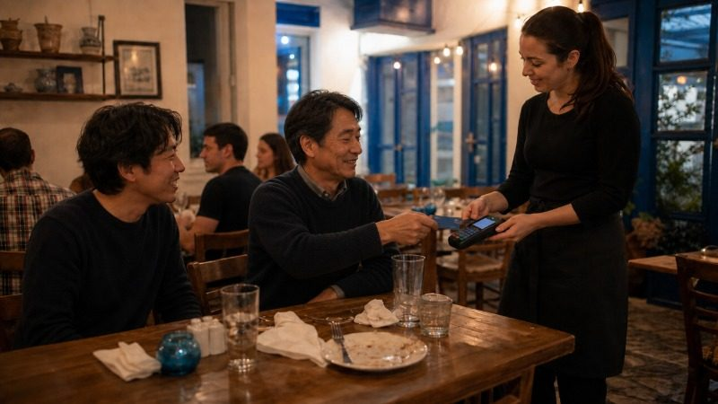

単語は知ってるはずなのに、
聞き取れない。出てこない。
速いのではなく、音がつながって形が変わっているだけです。その変わり方を知って、声に出すところまで、90分で練習します。
日本時間・Zoom・90分・参加費 ¥2,300
締め切りは10月14日（水）です。
この3つ、
聞き取れますか？
レッスンで実際に使う音声です。カフェやレストランで、店員さんから必ず飛んでくる3つ。文字を見ないで、まず耳だけで聞いてみてください。
英文と聞こえ方を見る
For here or to go?
店内で召し上がりますか？お持ち帰りですか？
to go の to は弱くつぶれて、「とぅー」ではなく「t’ごぅ」のように短く聞こえます。「るごぅ」のように聞こえることも多いです。
英文と聞こえ方を見る
Can I start you off with something to drink?
まず、お飲み物はいかがですか？
Can I はつながって「けなぃ」の一息になります。to drink の to も「t’」だけにつぶれて、次の drink にくっつきます。

英文と聞こえ方を見る
Together or separate?
お会計は1つにまとめますか、別々にしますか？
Together or は3語がつながって「Tげtheror」という1つのかたまりになります。文字で見た形とは、別物の音です。
ほかの練習音声は、Spotifyでも聞けます。
Spotifyで聞く（別のタブで開きます）
知らない単語は、
ありましたか？
3つとも、中学校で習う単語だけでできています。知らない単語は、たぶん1つもなかったはずです。
それでも聞き取れないのは、英語が単語ごとに区切って発音されないからです。となりの単語とくっつき、弱くなり、別の音に変わります。文字で覚えた形と、耳に届く音が、まったく別物になる。これが、何年勉強しても店先で固まってしまう理由です。
-
to go
to が 「t’」だけにつぶれて、次の go にくっついてしまいます。「とぅー ごー」という形で待っていると、いつまでも来ません。
-
Can I
2語が1つの音になって「けなぃ」。can も文の中では弱く、「けん」「くん」くらいにしか聞こえません。
-
Together or
3語がひとかたまりになって「Tげtheror」。単語を1つずつ追っていると、間に合いません。
このルールは、知らないあいだは何回聞いても聞こえません。知った瞬間に、聞こえるようになります。レッスンでやるのは、この「知った瞬間」を3つ作って、口で固めることです。
レッスンで、
やること
聞いて終わりにはしません。最後は必ず、あなたの口から出るところまでやります。
- 15分
いまの耳を知る
文字を見ないで、店員さんの英語を聞きます。どこまで拾えて、どこで消えたのか。自分のつまずく場所をはっきりさせます。
- 30分
音のルールを3つ覚える
つながる音・弱くなる音・消える音。この3つだけで、飲食店の決まり文句はほとんど説明がつきます。実際の音声で、1つずつ確かめます。
- 30分
声に出して、口を慣らす
聞こえたとおりに、何度もまねして言います。口の形と舌の位置は、その場で見てお伝えします。言えた音は、聞こえるようになります。
- 15分
本番の速さで通す
最後は、文字を見ないで本番と同じ速さで聞きます。聞いて、返す。お店の中と同じやりとりで仕上げます。
この90分で、
持って帰るもの
- 店員さんの決まり文句が、単語ではなくかたまりで聞こえるようになります。
- 聞き取れなかったときの一言が、考えなくても口から出てくるようになります。
- 飲食店で必ず聞かれる質問に、自分の定番の返事が決まった状態で帰れます。
- 「音は、知れば聞こえる」と分かるので、この後の練習の仕方が変わります。
こんな方の
ためのレッスンです
向いています
- 単語は知っているのに、お店では聞き取れずに固まってしまう方
- 旅行や出張の予定があって、現地で困りたくない
- 「もう一度言ってください」が言えずに、笑ってごまかしてしまう
- 読むのはできるのに、耳と口だけが追いつかない
まだ早いかもしれません
- 英語をほとんど習ったことがない方には、まだ難しいレッスンです。
- 文法を一から教える時間はありません。耳と口だけに90分を使います。
HARU

「知っている英語」を「使える英語」に変えるためのレッスンをしています。
日本人が聞き取れないのは、能力の問題ではありません。どの音がどう変わるかを、誰も教えてくれなかっただけです。そこを1つずつ開いていくのが、このレッスンです。
日時と、
お申し込み
- 日時
- 10月15日（木）21:30〜23:00（日本時間）・90分
- 参加費
- ¥2,300（この日1回のレッスン分）
- 締め切り
- 10月14日（水）まで
- 場所
- Zoom。お申し込みの後、入り方をメールでお送りします。
- 内容
- 飲食店で店員さんが使う英語を使った、音のつなげ方（リンキング）と発音の練習
- あると安心
- イヤホンと、声を出せる場所
飲食店英会話のコースをお持ちの方は、メールでお送りしている購入者価格（¥1,000）のリンクからお申し込みください。見つからないときは haru@harmonyhorizon.space までご連絡ください。
気になること
英語が話せなくても大丈夫ですか？
大丈夫です。話す練習ではなく、聞こえた音をまねして声に出す練習になります。英文をご自分で組み立てる場面はありません。
顔は出さないといけませんか？
口の形を見てお伝えできるので、出していただけると上達が早いです。ただ、難しいときはカメラを切ったままでも参加できます。
当日、都合が悪くなったら？
録画をお送りしますので、後からご覧いただけます。ただ、声を出す時間が中心のレッスンですので、できるだけその場でご参加ください。
飲食店英会話のコースを持っていなくても参加できますか？
参加できます。コースを前提にしたお話はしません。この90分だけで完結する内容です。
「え？今なんて？」を、
この日で減らしませんか。
聞き取れないまま旅行の日が来るか、音のルールを知ってから行くか。変わるのは、90分です。
申し込む参加費 ¥2,300 ・ 締め切り 10月14日（水）・ Zoom・90分